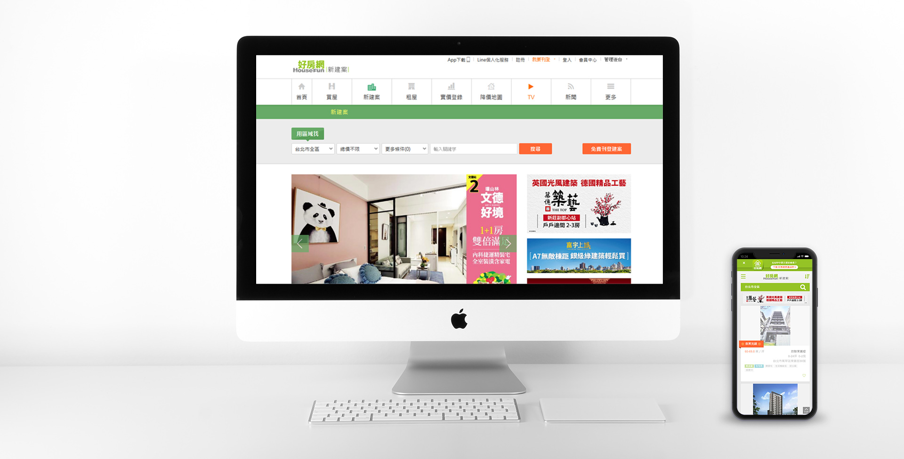
好房網新屋頻道
2020/4
-
市場策略調整，籌備成立新建案頻道投入新建案市場，完成各項網站企劃/籌備/建置。
負責項目
網站頻道企劃
- 前/後台功能規劃
- 機制數據面設計
- 各項建商資料串接規劃
- 運用使用者軌跡，產出符合用戶所在地的建案內容
- 依建案資料規劃推薦功能
新建案內容招募
- 營運前/後-招募建案資料流程規劃
- 提供用戶重點資訊內容
- <創新>加入房價資訊對比內容
- 提供建商刊登聯繫，協助建案量成長
功能規劃
- 利用區域推薦附近新建案內容
- 標註特色tag，快速了解建案特徵
- 首創建案比較功能，標示/隱藏標的建案
- 串接電話系統，個人資訊不外流
維運
- 依據資料端需求，逐步調整資訊呈現方式
- 提供合作廠商端各項指標數據報表
- 建案地址與接待中心地圖資料校正
- 逐步調整SEO內容
專案歷程
-
- 前期規劃：前台wireframe，Information Architecture，並與前後端開發後台功能。
- 開發前期：協調人力工時，規劃調配資源，並籌備建案資料蒐集建檔流程，因應時程，一併投入建案招募作業。
- 開發中期：功能測試/調整各項功能微調。
- 開發後期：驗收各項功能頁面與資訊比對。
- 完成上線。
規劃內容說明
-
- 新建案頻道前後台規劃內容
前台
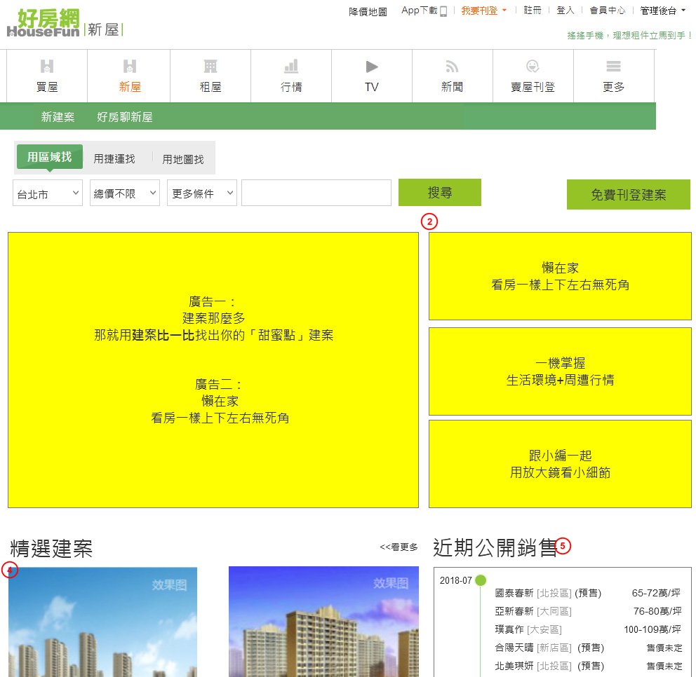
後台
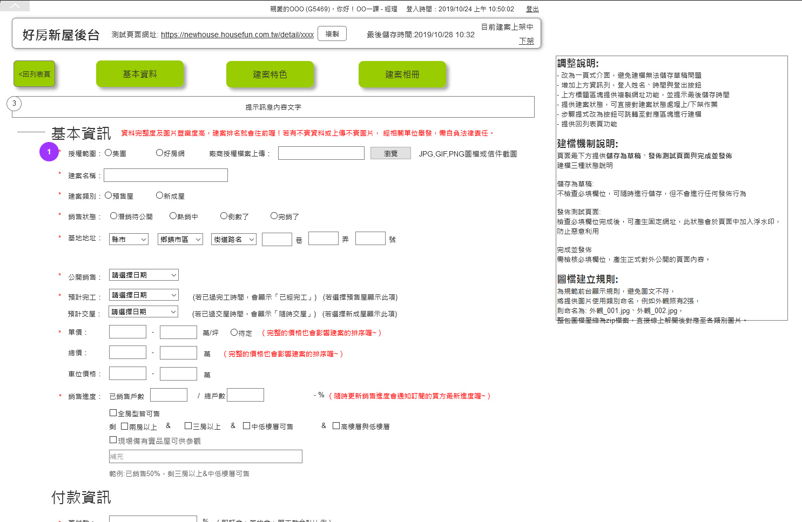 - 精選建案-依據用戶軌跡顯示對應區域內的建案，符合用戶搜尋標的
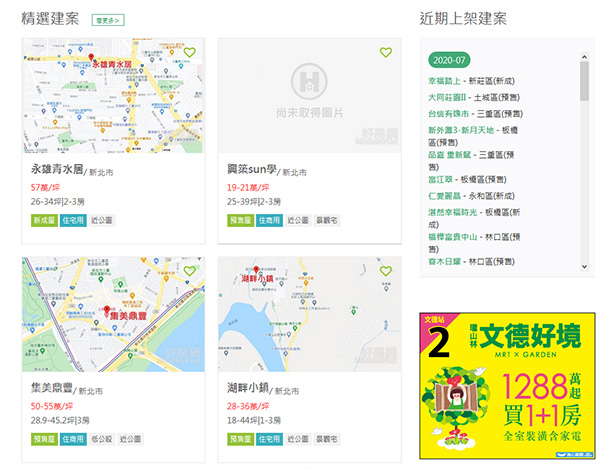 - 近期上架建案-顯示近期新上架建案，以月份區分新建案內容
- 特色標籤結合搜尋功能，依據標籤內容尋找用戶更適合的建案
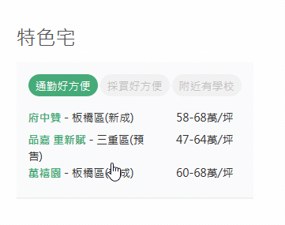
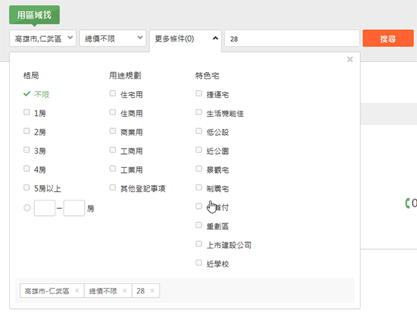 - 熱門關鍵字-依據瀏覽量排名顯示建案名稱快速連結
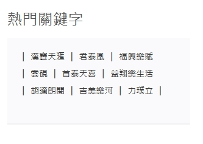 - 格局圖功能-新建案除價格地點外最受關注的就是格局圖，利用標籤按鈕後展開格局圖，能快速閱覽
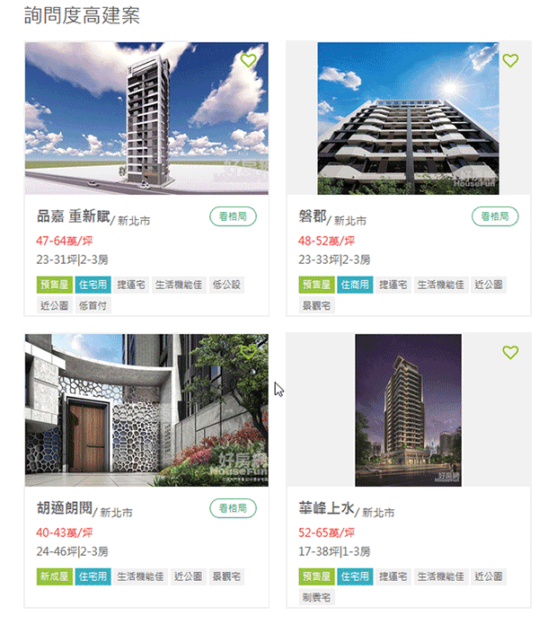 - 建案比較功能-可選擇4種不同建案進行比較，更專注想了解的建案資訊並能產生網址立即不登入分享
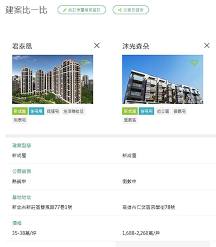 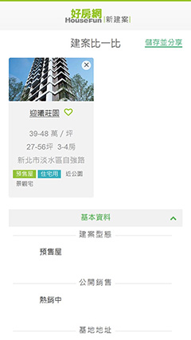
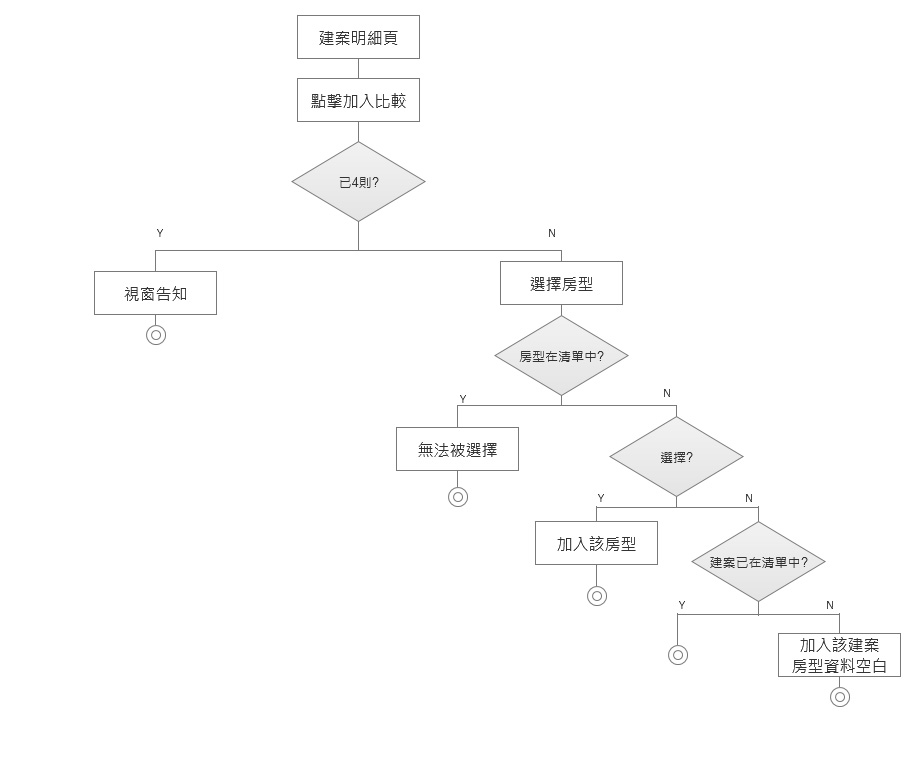
- 新建案頻道前後台規劃內容
-
成效
-
- 新建案專案如期如質上線
- 招募建案數量1個半月與行銷/設計/前端執行招募建案專案，達到200件以上
上線時間
-
2020/4/17 完成上線
覆盤
-
原因說明1:
串接測試機的資料皆為初期建置時建立，且欄位資料不齊全，在實際測試資料建檔時無法完整呈現接近真實樣貌的內容，測試耗費時間過長改善方向：
應於初期須考量各欄位內容有缺漏的情況，將重點內容與後台規劃同步，現實情況並非所有供應商都能將資料完整提供，前期規劃時限制過多，雖DEMO頁面完整，但不符實際使用情境，於規劃初期的內容要再加強通則思考方向，避免欄位規則來回調整的情況再次出現。原因說明2:
供應商招募進度落後，無法有快速且實際的成效。改善方向：
此為新頻道上線初期面臨的難題，有既有高流量頻道導流，卻未能反應在新頻道的招募進度，檢討應更明確定義上線日，並以上線日為目標準備與行銷單位/stakeholder 同步宣傳導流，才不會導致需要在專案後期追趕招募供應商的目標進度。